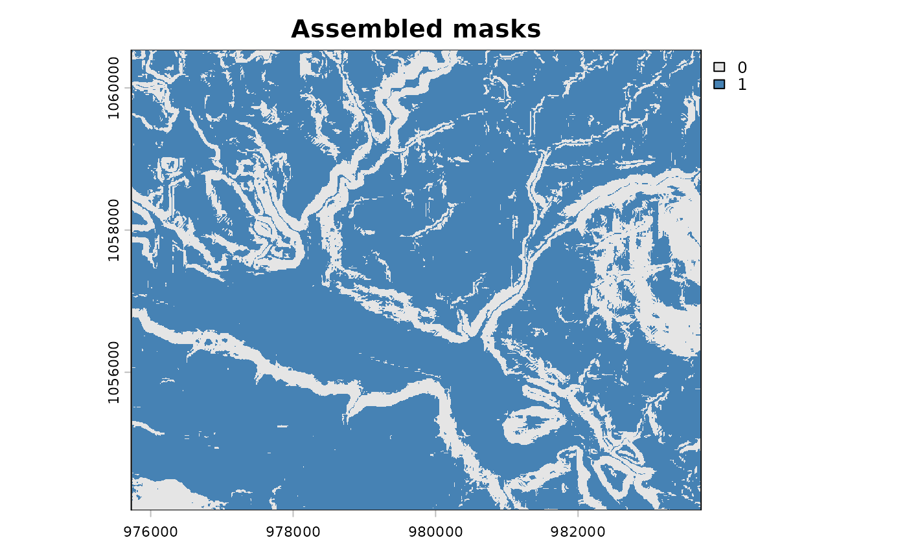

Combines multiple binary (0/1) rasters via logical OR. A cell is 1 if
it is 1 in any input layer. Useful for merging flood or floodplain layers
from different sources.
Examples
slope <- terra::rast(system.file("testdata/slope.tif", package = "flooded"))
# Two masks with different thresholds
gentle <- fl_mask(slope, threshold = 5, operator = "<=")
moderate <- fl_mask(slope, threshold = 15, operator = "<=")
# Union: cells meeting either criterion
combined <- fl_flood_assemble(gentle, moderate)
terra::plot(combined, col = c("grey90", "steelblue"), main = "Assembled masks")
